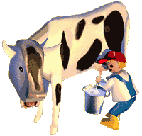
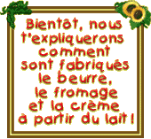
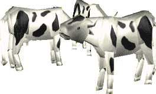

|
 Le bébé de la vache s'appelle le veau. Le veau grandit d'abord dans le ventre de sa maman pendant 9 mois : dès qu'il naît, la vache commence à fabriquer du lait pour le nourrir car il ne peut pas manger d'herbe comme sa maman. Maman vache fabriquera du lait pendant encore 10 mois après la naissance du veau. Mais elle fabrique bien plus de lait que son petit a véritablement besoin. Tous les jours, elle fabrique entre 20 et 30 litres de lait : c'est à dire qu'elle peut remplir 20 à 30 bouteilles de lait. Tu te rends compte : une vache pourrait nourrir environ 60 enfants comme toi au petit déjeuner ! Mais attention la vache a besoin d'une partie de son lait pour nourrir son petit, donc le fermier ne peut pas lui prendre tout son lait !  Avec
le lait de la vache, on peut aussi fabriquer du beurre, du fromage et
de la crème fraîche : décidément, madame vache nourrit beaucoup de monde ! Avec
le lait de la vache, on peut aussi fabriquer du beurre, du fromage et
de la crème fraîche : décidément, madame vache nourrit beaucoup de monde ! La brebis et la chèvre fabriquent aussi du lait pour nourrir leur petit : le goût de leur lait est plus fort, il est plus utilisé pour fabriquer du fromage. |
| Tu
peux vérifier si tu as bien compris cette fiche !
Clique ici pour jouer ! |
Si
tu préfères retrouver une recette dans laquelle on utilise
le lait ? Clique ici ! |